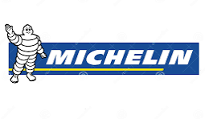
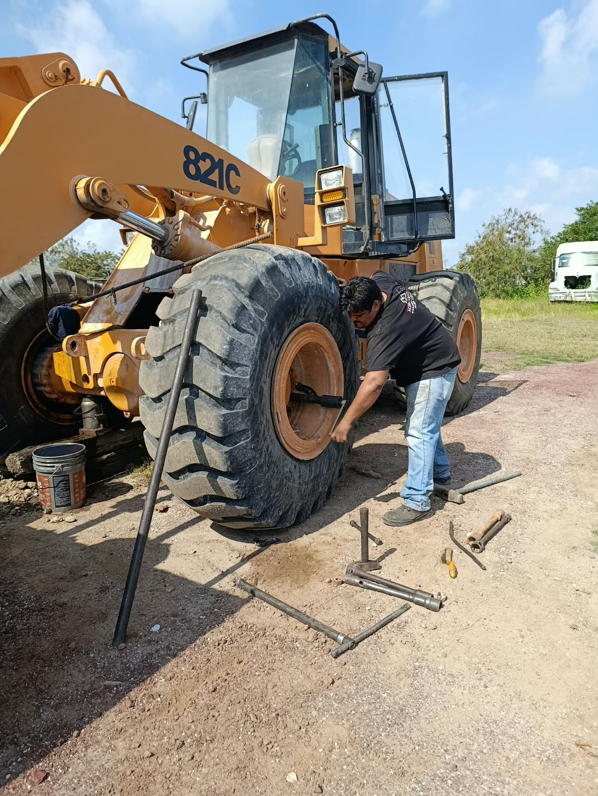
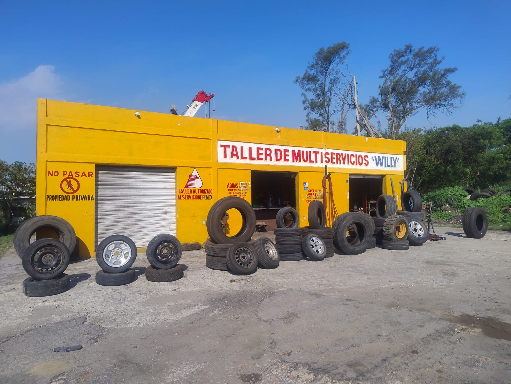

Reparación
de llantas de cualquier tipo
Atención para llantas con daños que requieren revisión y reparación.
Ciudad Madero · Tamaulipas
Soluciones para llantas, rines y vehículos de trabajo, también con servicio de vulcanizadora móvil.
Consultando horario…Horario de atención
Atención para quien
vive en movimiento.
Acompañamos a conductores y vehículos de trabajo con servicios relacionados con llantas y rines en Ciudad Madero.
EncuéntranosLo que hacemos
Consulta por WhatsApp para conocer detalles sobre el servicio que necesitas.
Atención para llantas con daños que requieren revisión y reparación.
Atención relacionada con llantas y rines. Consulta opciones y disponibilidad.
Servicio orientado a camiones y vehículos que trabajan en el camino.
Consulta sobre birlos para camión y la atención que requieres.
Información y atención relacionada con bolsas de aire para vehículos de trabajo.
Servicio de vulcanización móvil. Escríbenos para consultar atención y cobertura.
Nuestras marcas

Consulta por WhatsApp la disponibilidad de cada marca.
Galería
Un vistazo al espacio de Vulcanizadora Willy.



Fotografía proporcionada para Vulcanizadora Willy.

Planea tu visita
Horario de atención.
Estamos en
Busca el taller como “Taller de Multiservicios Willy” en Google Maps.
Hablemos
Cuéntanos qué necesitas y te orientamos sobre nuestros servicios.